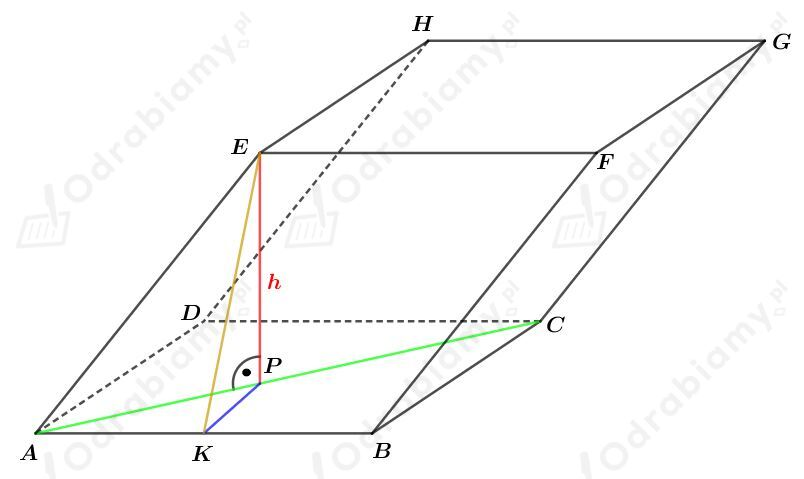

a)
Rysunek:

Zauważmy, że
Wobec tego wykorzystując funkcję sinus możemy obliczyć długość odcinka EK. Mamy:
Łatwo zauważyć również, że
Zauważmy, że przekątna AC rombu ABCD jest również dwusieczną kąta BAD.
Wobec tego miara kąta
Obliczmy długość PK wykorzystując funkcję tangens. Mamy:
Korzystając z twierdzenia Pitagorasa dla trójkąta EKP mamy:
b)
Rysunek pomocniczy:
Zauważmy, że
Korzystając z funkcji sinus mamy:
Korzystając z funkcji cosinus mamy:
Zauważmy, że przekątna AC rombu ABCD jest również dwusieczną kąta BAD. Stąd
Korzystając z funkcji tangens mamy:
Korzystamy z tożsamości
i mamy dalej
i otrzymujemy:
Korzystając z twierdzenia Pitagorasa dla trójkąta EKP mamy:
Rozważmy
Podstawmy
Mamy zatem
Wracając do podstawienia mamy:
Zatem otrzymujemy:
Wyznaczmy pole powierzchni podstawy tego romboedru. Mamy:
Wyznaczmy objętość tego romboedru. Mamy:
co kończy dowód.
Dany jest romboedr, którego ścianami są romby o boku długości 3 cm i kącie ostrym 45o.
a)
Wyznaczmy pole powierzchni jednej ściany, czyli pole rombu boku długości 3 cm i kącie ostrym 45o. Korzystając ze wzoru na pole rombu mamy:
Powierzchnia całkowita romboedru zbudowana jest z sześciu takich rombów. Zatem
b)
| Objętość romboedru, którego każda ściana jest rombem o kącie ostrym 𝛼 i boku długości a, dana jest wzorem: |
Wyznaczmy objętość romboedru, którego ścianami są romby o boku długości 3 cm i kącie ostrym 45o. Mamy: